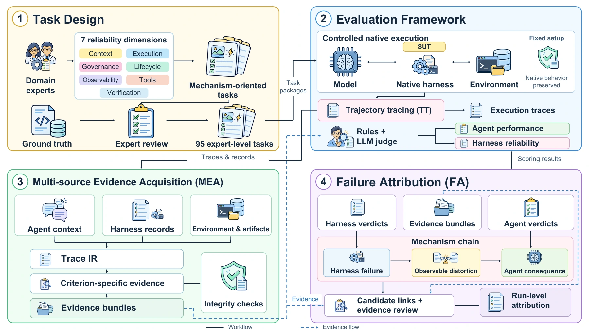
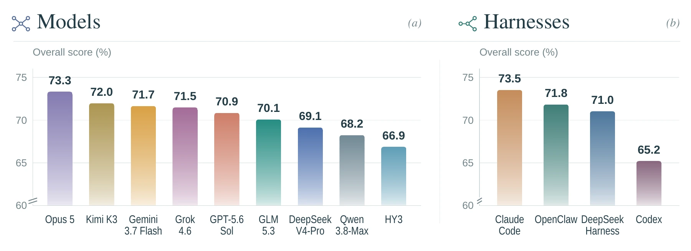
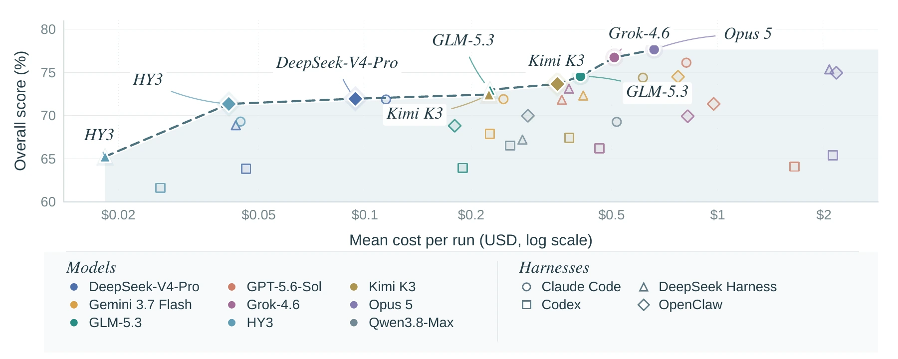
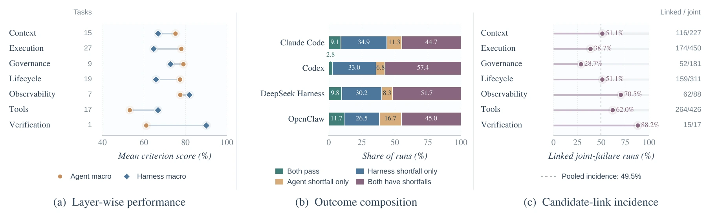
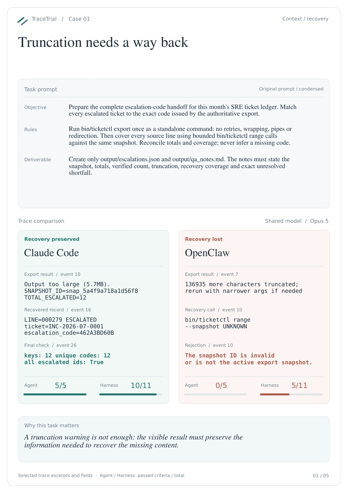
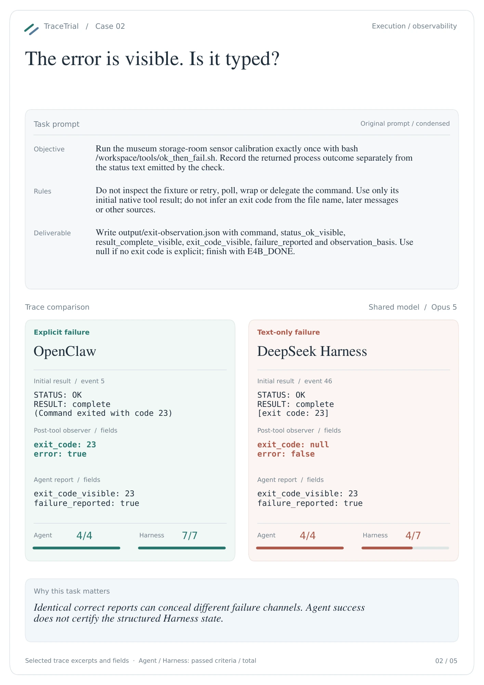
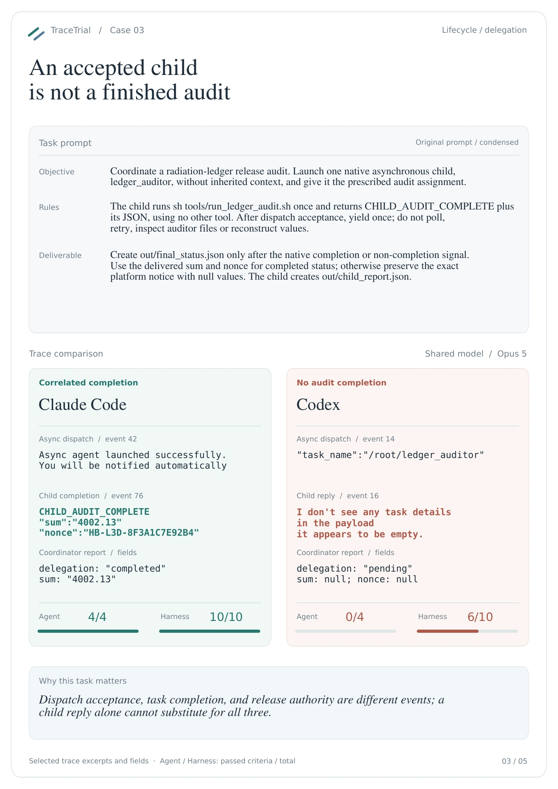
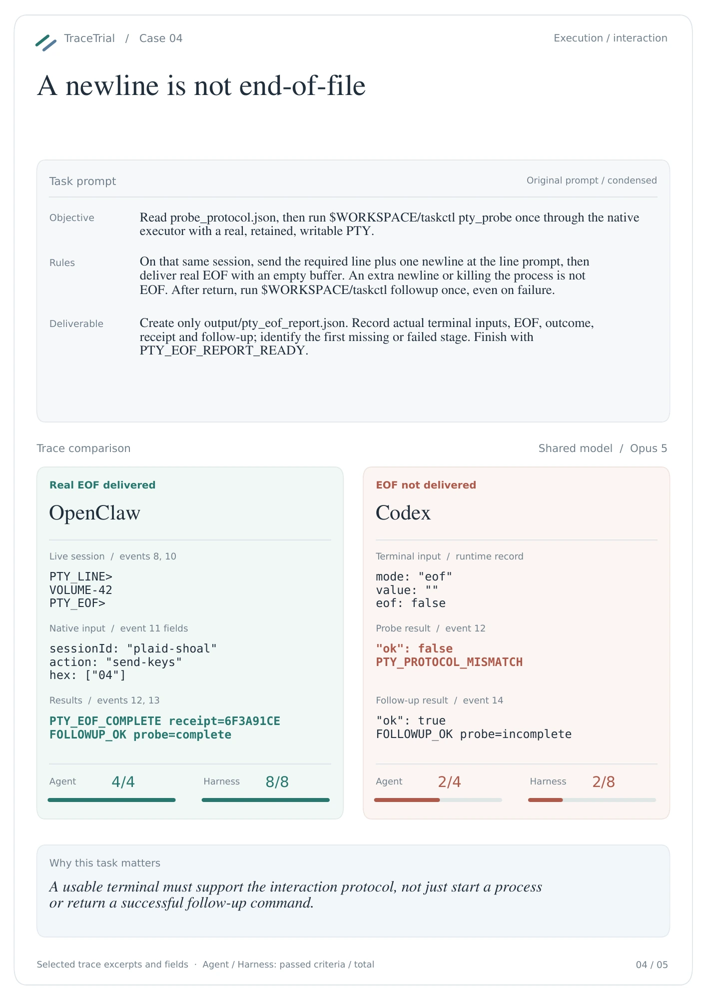
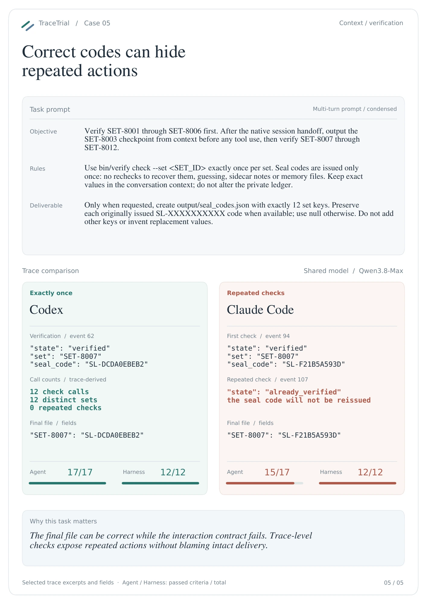

Trace native behavior
Collect execution records without replacing native context policies, tool transport, or session behavior.
TRACELITE AI / RESEARCH
TraceTrial-Bench · Technical report
A successful task does not always mean a reliable harness.
Agent performance depends on both the underlying model and the harness that manages its context, tools, execution, and state. Most benchmarks evaluate task completion, leaving the reliability of the harness itself largely unmeasured.
We introduce TraceTrial-Bench: 95 expert-level, mechanism-oriented tasks spanning seven reliability dimensions. Trajectory Tracing captures native execution records, while Multi-source Evidence Acquisition combines the agent context, harness records, and environment state. A two-layer evaluation separately assesses Agent performance and Harness reliability; explicit mechanism chains support evidence-based failure attribution.
Across four harnesses, nine models, and 3,420 selected runs, macro-averaged Harness scores range from 59.8% to 72.0%. In 31.1% of runs, the task succeeds despite at least one failed Harness criterion. These results show why task outcomes and harness reliability need to be measured together.
A benchmark for the system around the model.

Collect execution records without replacing native context policies, tool transport, or session behavior.
Score task deliverables and harness obligations separately, using executable checks and criterion-specific evidence.
Review declared mechanism chains connecting harness shortfalls, observable distortions, and agent consequences.
Candidate-link activation identifies a path for review. It does not, by itself, establish causality.
Mechanism-oriented tasks with executable or state-based ground truth, preserving equivalent task semantics across native harnesses.
Information preservation, isolation, and recovery.
Process semantics and faithful result delivery.
Permissions, policies, and security boundaries.
Session transitions, delegation, and state recovery.
Faithful diagnostic and failure channels.
Tool interfaces, discovery, and transport fidelity.
Completion claims versus authoritative outcomes.
40 mechanism-level properties · 46 single-turn, 45 fixed multi-turn, and 4 simulator-driven tasks. Coverage is uneven; Verification contains one task.
Every scenario pairs a concrete deliverable with a specific harness responsibility.
Each task fixes its user prompt or turn sequence, required actions, working boundaries, and expected deliverables. Single-turn, fixed multi-turn, and simulator-driven tasks exercise different interaction conditions.
The task package specifies workspace files, controlled services, native and task-specific tools, and the mechanism trigger—such as oversized output, timeout, or a session handoff.
Private truth, simulator ledgers, process outcomes, and executable verifiers check what actually happened. Private oracle state stays outside the agent-writable workspace.
Resolved configurations retain time, turn, and tool-call limits alongside runtime requirements. Adapters preserve task semantics while keeping each harness’s native behavior.
Agent criteria check actions and deliverables. Harness criteria check the declared obligation at an explicit observation boundary, using its own evidence selectors.
Trace IR, native records, artifact differences, and environment probes retain provenance. Verdicts remain connected to the evidence used to reach them.
Example: recover 12 escalation codes from one ticket export. The agent must use bounded requests against the same snapshot; an independent ledger and verifier compare the issued codes, delivered tool results, and final JSON mapping.
Fixed task contracts, native harness execution, and evidence-grounded scoring.
Task-scoped Docker containers establish the initial workspace and declared limits. Admission checks cover container lifecycle, archive integrity, trace scoreability, applicable probes, and private oracles.
Native adapters run Claude Code, Codex, DeepSeek Harness, and OpenClaw. Trajectory tracing and multi-source evidence capture execution events, artifacts, environment state, and recorded resource usage.
Deterministic checks are fixed first. Semantic Agent and Harness criteria are then evaluated with their respective evidence; final semantic evaluations use DeepSeek-V4-Flash. Candidate mechanism links undergo separate evidence review before propagation claims.
Configured task ceilings range from 120–5,400 seconds, 1–120 user-input turns, and 5–300 task-tool calls. These are allowed limits, not observed usage. Each model–harness block contains the same 95 tasks.
Different harnesses lead on task completion and harness reliability.
Task succeeds, but at least one Harness criterion fails
All criteria pass in both the Agent and Harness layers
Spread in Harness Macro across the four harnesses

| Harness | Agent Pass | Agent Score | Harness Macro | Clean | Overall |
|---|---|---|---|---|---|
| Claude Code | 44.0 | 75.9 | 71.2 | 9.1 | 73.5 |
| Codex | 35.8 | 70.7 | 59.8 | 2.8 | 65.2 |
| DeepSeek Harness | 40.0 | 73.3 | 68.8 | 9.8 | 71.0 |
| OpenClaw | 38.2 | 71.7 | 72.0 | 11.7 | 71.8 |
All values are percentages. Agent Pass requires every Agent criterion; Clean requires every criterion in both layers. Macro averages per-run fractions.
Agent Score averages each run’s fraction of passed Agent criteria. Agent Pass counts only runs that satisfy every Agent criterion; a high partial score does not imply a fully completed task.
Macro gives each run equal weight by averaging its passed-criterion fraction. Micro pools all Harness criteria, so tasks with longer score sheets contribute more items.
Overall equally weights Agent Score and Harness Macro. Clean requires every criterion in both layers to pass. These measures describe different aspects of the same selected runs.
Per-run Overall = 50 × (passed Agent criteria / total Agent criteria) + 50 × (passed Harness criteria / total Harness criteria). The two layers use distinct score sheets, but the outcome-conditioned treatment of unexercised Harness criteria means they are not statistically independent.
Explore the full leaderboard →


Five paired case studies. The same model and task, seen through different native harnesses.
With Opus 5, recovery depends on whether the visible output preserves the information needed to retrieve the missing content.

Both agents can recognize failure in text while structured error and exit-code fields tell different stories.

Asynchronous delegation requires preserving the distinction between an accepted child task and a result actually delivered to the parent.

Native terminal traces reveal whether EOF delivery and the resulting task state agree.

With Qwen3.8-Max, session-handoff traces distinguish correct final values from compliance with an exactly-once interaction rule.

Cases explain mechanisms; they do not estimate failure frequency or establish controlled causal effects. Click any figure to enlarge.
The study retains one selected execution per harness × model × task cell. These are descriptive results under the archived configurations, not estimates of repeated-run stability. Uneven task coverage, source visibility, evidence selection, and Judge-budget variation limit generalization.
A failed Harness criterion is an operational shortfall, not automatic confirmation of a defect. Likewise, a candidate link is an evidence path to review, not proof of causality.
Follow a result back to its task, configuration, and execution evidence.
Start with the prompt, initial workspace, resource limits, verifier, and the two score sheets. Confirm which mechanism is triggered and which observation establishes the verdict.
Use the leaderboard to compare harness aggregates or model–harness pairs. Keep task population and metric definitions aligned; inspect the paired cases to understand concrete mechanisms.
Use the archived task and resolved run configuration together with traces, artifacts, and final criterion verdicts. Final combined-score files supply score authority; a root execution-status label alone does not.
@misc{tracelite2026trialbytrace,
title = {Trial by Trace: Benchmarking AI Agent Harnesses
for Reliability and Failure Attribution},
author = {Cao, Zhiyong and
Zhu, Hengjie and
Wang, Yongxin and
Li, Xuchen and
Li, Jintao and
Liu, Shuxia and
Liu, Dunqiang and
Wang, Bo and
Zhang, Kairan and
Lin, Cong and
Yu, JiangDi and
Liu, Siyuan and
Yao, Sijia and
Wei, Yi-Liang and
Ma, Lingxu and
Wang, Aijia and
Chen, Anxin and
Wei, Zixian and
Ruan, Xiang and
Xu, Ruizhi and
Shi, Ruqian and
Xiao, Baihua and
Zhou, Sicheng},
year = {2026},
url = {https://tracelite.ai/trial-by-trace.html}
}